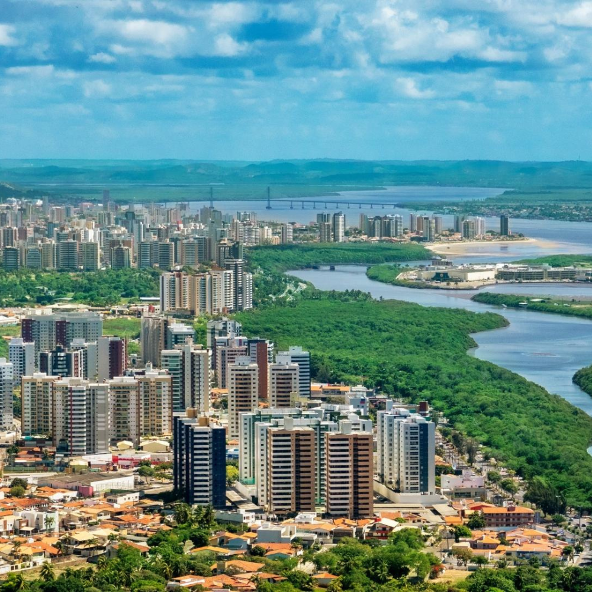

O estado de Sergipe pertence à Região Nordeste do Brasil e sua capital é Aracaju.Ele destaca-se por ser o menor estado brasileiro em extensão territorial, mas possui uma grande relevância histórica, cultural e econômica. Sergipe é famoso por suas praias urbanas organizadas, pela Orla de Atalaia em sua capital — considerada uma das mais bonitas do país — e pela histórica cidade de São Cristóvão, a quarta mais antiga do Brasil, cujo centro histórico é Patrimônio Mundial da UNESCO. Economicamente, o estado desponta na exploração de petróleo e gás natural e na produção de alimentos.

Voltar